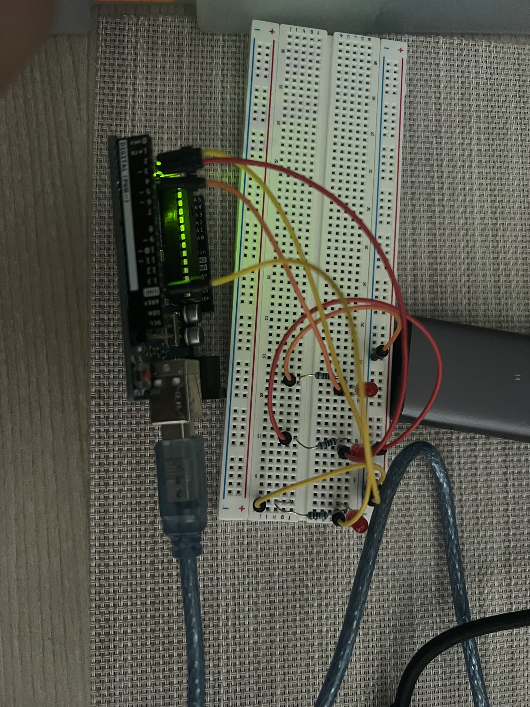
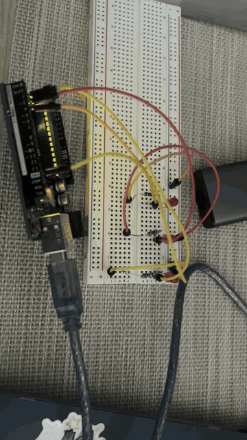
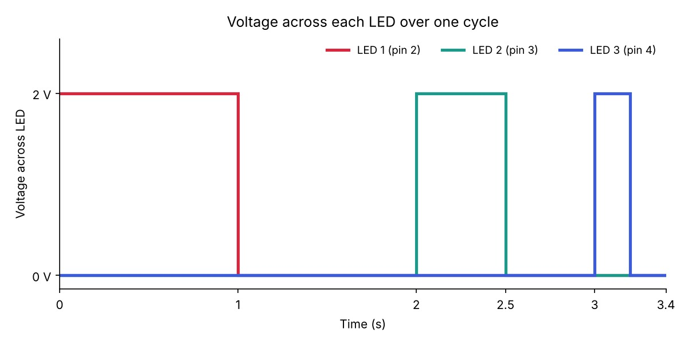

VR = Vsupply − VLED = 5 V − 2 V = 3 V
R = VR / I = 3 V / 0.020 A = 150 Ω → used 220 Ω
I = 3 V / 220 Ω ≈ 13.6 mA
P = 3 V × 0.0136 A ≈ 0.041 W

void setup() {
// Set pin 2 as an output so it can power LED 1
pinMode(2, OUTPUT);
// Set pin 3 as an output so it can power LED 2
pinMode(3, OUTPUT);
// Set pin 4 as an output so it can power LED 3
pinMode(4, OUTPUT);
}
void loop() {
// Turn LED 1 on by setting pin 2 to HIGH
digitalWrite(2, HIGH);
// Keep LED 1 on for 1 second
delay(1000);
// Turn LED 1 off by setting pin 2 to LOW
digitalWrite(2, LOW);
// Keep LED 1 off for 1 second
delay(1000);
// Turn LED 2 on by setting pin 3 to HIGH
digitalWrite(3, HIGH);
// Keep LED 2 on for half a second
delay(500);
// Turn LED 2 off by setting pin 3 to LOW
digitalWrite(3, LOW);
// Keep LED 2 off for half a second
delay(500);
// Turn LED 3 on by setting pin 4 to HIGH
digitalWrite(4, HIGH);
// Keep LED 3 on for 0.2 seconds
delay(200);
// Turn LED 3 off by setting pin 4 to LOW
digitalWrite(4, LOW);
// Keep LED 3 off for 0.2 seconds
delay(200);
}
One full cycle of the pattern takes 1.0 + 1.0 + 0.5 + 0.5 + 0.2 + 0.2 =
3.4 seconds, and then loop() starts it again.


The Arduino Uno has 20 pins that can be used as digital outputs.
With the 220 Ω resistors, each LED draws about 13.6 mA, so 18 LEDs all on at once would draw 18 × 13.6 mA ≈ 245 mA.
I tested this by setting the on and off delays to the same value
(d milliseconds) and making them smaller and smaller. One
blink is 2 × d ms, so the blink rate is
f = 1000 / (2 × d) flashes per second.
At delay(20), the LED was still visibly flickering, but at delay(10), it appeared steady to me. This is about 50 flashes per second.
Yes. I used AI tool to help me convert some files to the correct one. I also used AI tool to help me draft the graph that i written on paper. I also used AI tool to write the HTML file and to keep everything in order.